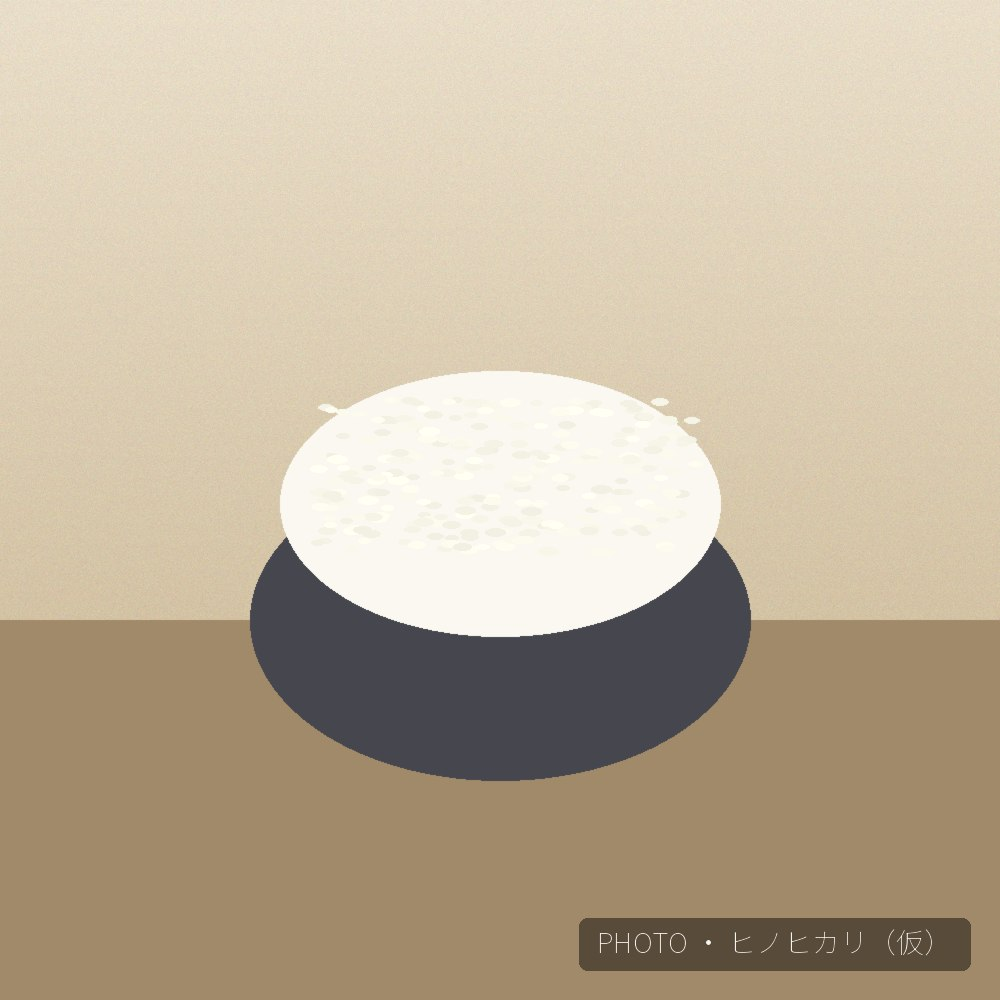

ヒノヒカリは、西日本を中心に広く親しまれている食用米の定番品種です。コシヒカリ系統から生まれ、粒はやや小ぶりながらも、程よい粘りと上品な甘みのバランスに優れています。
兵庫県特A地区の粘土質の土壌と昼夜の寒暖差の中で育てることで、味わいに深みが増し、冷めてもおいしいお米に仕上がります。ご飯単体はもちろん、和食からお弁当まで、幅広い料理に寄り添う一品です。
| 品種 | ヒノヒカリ |
|---|---|
| 産地 | 兵庫県特A地区（三木市吉川町／加東市東条町・社町） |
| 味の特徴 | 程よい粘りと上品な甘み、バランスの良い食味 |
| おすすめの食べ方 | 白米ごはん、和食全般、お弁当・おにぎり |
| ご購入方法 | オンラインストア（STORES）にて販売しております |